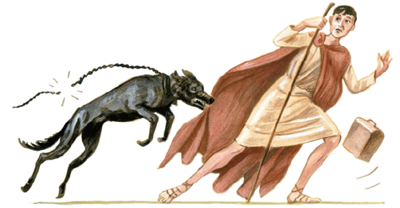

CAVE CANEM
I
Iānua vīllae ē duābus foribus cōnstat. Sub foribus est līmen, in quō SALVE scrīptum est. Foris duōs cardinēs habet, in quibus vertī potest; cum foris in cardinibus vertitur, iānua aperītur aut clauditur. Servus cuius officium est forēs aperīre et claudere ac vīllam dominī cūstōdīre, ōstiārius vel iānitor appellātur.
Sī quis vīllam intrāre vult, iānuam pulsat et extrā iānuam exspectat, dum iānitor forēs aperit eumque in vīllam admittit. Iānitor intrā iānuam sedet cum cane suō, quī prope tam ferōx est quam lupus; itaque necesse est eum catēnā vincīre. Anteā dominī sevērī nōn sōlum canēs, sed etiam iānitōrēs suōs catēnīs vinciēbant.
Catēna quā canis vincītur ex ferrō facta est. Catēna cōnstat ē multīs ānulīs ferreīs quī inter sē coniunguntur. Ānulī quibus digitī ōrnantur nōn ex ferrō, sed ex aurō factī sunt. Aurum est magnī pretiī sīcut gemmae. Ānulus aureus multō pulchrior est quam ānulus ferreus.
Forēs ē lignō factae sunt sīcut tabulae. Lignum est māteria dūra, sed minus dūra quam ferrum. Quī rēs ferreās vel ligneās facit, faber appellātur. Deus fabrōrum est Vulcānus. —
Iānua clausa est. Iānitor, quī forēs clausit postquam Mārcus intrāvit, iam rūrsus dormit! Iānitōre dormiente, canis vigilāns iānuam cūstōdit. Extrā forēs stat tabellārius (sīc appellātur servus quī epistulās fert, nam anteā in tabellīs scrībēbantur epistulae). Is baculō ligneō forēs pulsat atque clāmat: “Heus! Aperī hanc iānuam! Num quis hīc est? Num quis hanc aperit iānuam? Heus tū, iānitor! Quīn aperīs? Dormīsne?”
Cane lātrante iānitor ē somnē excitātur.
Tabellārius iterum forēs pulsat magnā vōce clāmāns: “Heus, iānitor! Quīn mē admittis? Putāsne mē hostem esse? Ego nōn veniō vīllam oppugnātum sīcut hostis, nec pecūniam postulātum veniō.”
Tandem surgit iānitor. “Quis forēs nostrās sīc pulsat?” inquit.
Tabellārius (extrā iānuam): “Ego pulsō.”
Iānitor (intrā iānuam): “Quis ‘ego’? Quid est tibi nōmen? Unde venīs? Quid vīs aut quem quaeris?”
Tabellārius: “Multa simul rogitās. Admitte mē! Posteā respondēbō ad omnia.”
Iānitor: “Respondē prius! Posteā admittēris.”
Tabellārius: “Nōmen meum nōn est facile dictū: Tlēpolemus nōminor.”
Iānitor: “Quid dīcis? Cleopolimus? Vōx tua difficilis est audītū, quod forēs intersunt.”
Tabellārius: “Mihi nōmen est Tlēpolemus, sīcut iam dictum est. Tūsculō veniō. Erum tuum quaerō.”
Iānitor: “Sī erum salūtātum venīs, melius est aliō tempore venīre, nam hāc hōrā erus meus dormītum īre solet; post brevem somnum ambulātum exībit, deinde lavātum ībit.”
Tlēpolemus: “Sī quis per hunc imbrem ambulat, nōn opus est posteā lavātum īre! At nōn veniō salūtātum. Tabellārius sum.”
II
Tandem iānitor forēs aperit et Tlēpolemum forīs in imbre stantem videt. Canis īrātus dentēs ostendit ac fremit: “Rrrr...!” nec vērō tabellārium mordēre potest, quod catēnā retinētur.
Iānitor: “Cavē! Canis tē mordēbit!” Sīc iānitor hominem intrantem dē cane ferōcī monet.
Tlēpolemus in līmine resistēns “Retinē canem!” inquit. “Nōlī eum solvere! Nec vērō opus est mē monēre dē cane, ego enim legere sciō.” Tabellārius solum intrā līmen aspicit, ubi CAVE CANEM scrīptum est īnfrā imāginem canis ferōcis. “Neque haec imāgō neque canis vērus mē terret!” inquit, et propius ad canem accēdit.
“Manē forīs!” inquit iānitor. “Nōlī ad hunc canem accēdere! Iam tē monuī!”
Tabellārius vērō, quamquam sīc ā iānitōre monitus est, alterum gradum ad canem versus facit — sed ecce canis in eum salit catēnam rumpēns! Homō territus ex ōstiō cēdere cōnātur, sed canis īrātus pallium eius dentibus prehendit et tenet.

“Ei! Canis mē mordet!” exclāmat tabellārius, quī iam neque recēdere neque prōcēdere audet: canis fremēns eum locō sē movēre nōn sinit.
Iānitor rīdēns “Quīn prōcēdis?” inquit. “Nōlī resistere! Ego tē intrāre sinō. Iānuam aperuī. Prōcēde in vīllam!” Sīc iānitor virum territum dērīdet.
“Id facilius est dictū quam factū” inquit tabellārius atque alterum gradum facere audet, sed canis statim in pedēs posteriōrēs surgit atque pedēs priōrēs in pectore eius pōnit! Tabellārius, tōtō corpore tremēns, ex ōstiō cēdit: sīc canis eum ē vīllā pellit. “Removē canem!” inquit ille. “Iste canis ferōx mē intrāre nōn sinit.”
Iānitor eum tremere animadvertit iterumque dērīdet: “Quid tremis? Hicine canis tē terruit?”
Tlēpolemus: “Nōlī putāre mē ab istō cane territum esse! Sī tremō, nōn propter canem ferōcem, sed propter imbrem frīgidum tremō. Admitte mē sub tēctum, iānitor — amābō tē! Vincī istum canem ferōcem! Cūr eum solvistī?” Tabellārius enim canem ā iānitōre solūtum esse arbitrātur.
Iānitor catēnam manū prehendit canemque paulum ā tabellāriō removet. “Nōlī arbitrārī,” inquit, “mē canem solvisse. Canis ipse catēnam suam rūpit. Ecce catēna rupta.”
Tlēpolemus: “Num canis catēnam ferream rumpere potest? Id nōn crēdō. At certē vestem scindere potuit: vidēsne pallium meum novum, quod nūper magnō pretiō ēmī, scissum esse ā cane tuō?”
Iānitor: “Istud pallium nōn est magnī pretiī, neque id nūper ēmptum esse crēdō. Sed quid tū vēnistī? Num quid tēcum fers?”
Tlēpolemus: “Stultē rogitās, iānitor, nam iam tibi dīxī ‘tabellārium mē esse’. Quid tabellāriōs ferre arbitrāris? aureōsne iānitōribus? Profectō nōs aurum nōn ferimus.”
Iānitor: “Vōs scīlicet epistulās fertis.”
Tlēpolemus: “Rēctē dīcis. Epistulam afferō ad Lūcium Iūlium Balbum. Hocine erō tuō nōmen est?”
Iānitor: “Est. Quīn mihi istam epistulam dās?”
Tlēpolemus: “Prius vincī canem et sine mē intrāre! Nōlī iterum mē forās in imbrem pellere!”
Iānitor, postquam canem vīnxit, “Nōn ego,” inquit, “sed hic canis tē forās pepulit. Nōlī nārrāre ‘tē ā iānitōre forās pulsum esse’!”
Cane vīnctō, tabellārius tandem intrat epistulamque ostendit iānitōrī; quī statim epistulam prehendit et in ātrium ad dominum suum fert.
* * *
GRAMMATICA LATINA
Supīnum
[I] Amīcī salūtātum veniunt (= quia salūtāre volunt).
‘Salūtātum’ supīnum vocātur. Supīnum in -tum dēsinēns significat id quod aliquis agere vult et pōnitur apud verba ‘īre’, ‘venīre’, ‘mittere’ et alia.
Exempla: Rōmānī cotīdiē lavātum eunt. Mīlitēs oppidum oppugnātum mittuntur. Vesperī omnēs dormītum eunt. Mēdus et Lȳdia ad tabernam eunt ānulum ēmptum.
[II] Id est facile dictū = facile est id dīcere.
‘Dictū’ est alterum supīnum in -tū dēsinēns, quod apud adiectīva ‘facilis’ et ‘difficilis’ et pauca alia reperītur.
Exempla: Multa sunt faciliōra dictū quam factū. Vōx difficilis audītū est.
* * *
AD CAPITVLVM